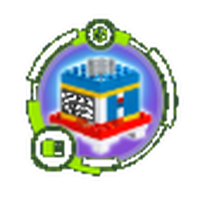
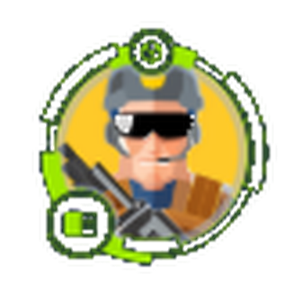

Penetration Testing
eJPT certified, with practical lab experience and a disciplined methodology.
Cybersecurity student - Germany
First-semester Applied Cyber Security student based in Gerstetten, Germany, with practical experience in Linux, networking, Python, and security tools. Looking for Werkstudent opportunity around Ulm, with a long-term goal of working in red teaming.
Curious, methodical, and committed to learning through practice.
/ 02 About me
I'm Mohamed Kayali, a first-semester Applied Cyber Security student at Hochschule Neu-Ulm, based in Gerstetten, Germany. I have a strong interest in penetration testing, networking, Linux, and practical IT security. I am flexible about starting dates, open to opportunities around Ulm, and willing to transition to a dual-study program for the right company.
Curious, methodical, and committed to learning through practice.— My approach to securitySee my learning path ↗
$ whoami
mohamed_kayali
$ cat mission.txt
finish_bachelor
earn_CPTS
grow_into_red_teaming
$ echo $MINDSET
Try harder_
eJPT certified, with practical lab experience and a disciplined methodology.
Building practical knowledge of networks, services, and security fundamentals.
Python, HTML, and CSS fundamentals applied to technical learning.
Develop practical offensive-security skills through ethical, controlled labs.
/ 03 Learning work
My project portfolio is growing. For now, this section highlights coursework and hands-on learning; detailed projects and write-ups will be added as they are completed.
Coursework from CS50's Introduction to Cybersecurity, covering core security concepts, threat awareness, and responsible security practice.
Practical learning through guided labs and certification preparation, with a focus on enumeration, methodology, and clear documentation.
More independent security projects and technical write-ups will be published here as they become ready to share.
/ 04 Experience
Early experience across IT, production, digital content, and hands-on technology programs.
Hochschule Neu-Ulm · Applied Cyber Security · First semester, Winter Semester 2026/27
YouTube and TikTok · Planned, filmed, edited, and published content for an audience of 10,000+ TikTok followers and 1,000+ YouTube subscribers · Since February 2024
Gained introductory insights into IT operations, workplace processes, and the day-to-day work of IT professionals. · October 2023 (1 week)
Karam House x NuVu Studio · Robotics, Arduino, design thinking, entrepreneurship, and international collaboration · 2018 - 2022
/ 05 Credentials
These credentials reflect my current learning path. I am continuing to build practical depth through labs and coursework.
INE Security · Junior Penetration Tester · Verify credential ↗
HarvardX · Introduction to Cybersecurity
HarvardX · Introduction to Programming with Python
Hack The Box Academy · Currently preparing
Ongoing CTF practice
Hochschule Neu-Ulm · Germany
// HACK THE BOX ACADEMY
Learning milestones from completed Academy modules. Each badge represents another step in my hands-on security journey.
Structured learning and effective study habits.
Hands-on learning with Hack The Box Academy.
Host discovery, port scanning and service enumeration.
Automating DNS reconnaissance with Python.

Exploring Metasploit modules in practical labs.
Core penetration-testing lab fundamentals.
Building foundational Python scripting skills.

Understanding a structured penetration-testing workflow.
Completed Academy learning milestone.
Academy module badges · Separate from professional certifications.
/ 06 Skills & Expertise
Building practical cybersecurity skills through hands-on labs, structured training, and independent projects, with a focus on offensive security and penetration testing.
Network enumeration, service exploitation, vulnerability assessment, and post-exploitation fundamentals.
Network traffic analysis, Linux fundamentals, service enumeration, and security assessment.
Developing foundational Python skills for scripting and automation, alongside HTML and CSS fundamentals.
/ 07 Contact
Seeking a Working Student position in Cybersecurity in Ulm and the surrounding area. Eager to apply my skills, gain hands-on experience, and contribute to real-world security projects. Flexible start date and open to dual study opportunities.